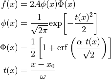

hyperspy._components.skew_normal module¶
-
class
hyperspy._components.skew_normal.SkewNormal(x0=0.0, A=1.0, scale=1.0, shape=0.0, module='scipy', **kwargs)¶ Bases:
hyperspy._components.expression.ExpressionSkew normal distribution component.
Asymmetric peak shape based on a normal distribution.For definition see https://en.wikipedia.org/wiki/Skew_normal_distributionSee also http://azzalini.stat.unipd.it/SN/
Variable
Parameter

x0

A

scale

shape
- Parameters
x0 (float) – Location of the peak position (not maximum, which is given by the mode property).
A (float) – Height parameter of the peak.
scale (float) – Width (sigma) parameter.
shape (float) – Skewness (asymmetry) parameter. For shape=0, the normal distribution (Gaussian) is obtained. The distribution is right skewed (longer tail to the right) if shape>0 and is left skewed if shape<0.
The properties mean (position), variance, skewness and mode (=position of maximum) are defined for convenience.
-
property
mean¶
-
property
mode¶
-
property
skewness¶
-
property
variance¶